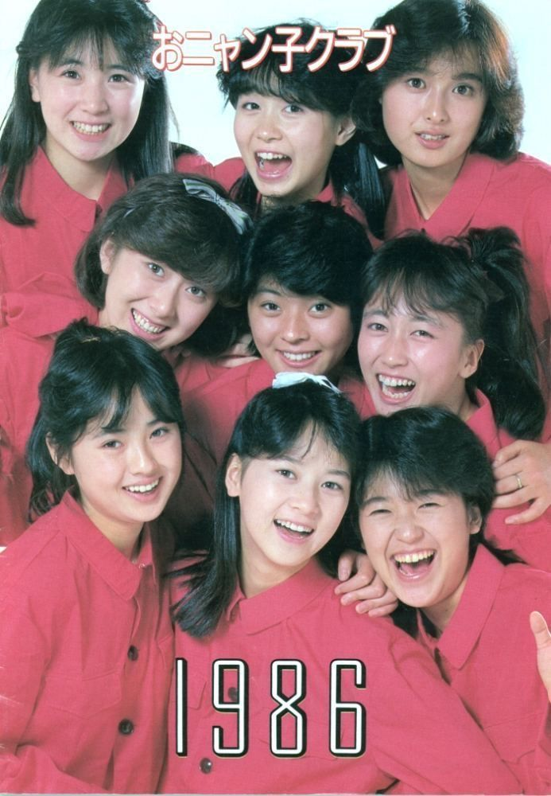

Onyanko Club (おニャン子クラブ) was a 19 member Japanese idol group originally formed with 11 members on April 1, 1985.
They made their official debut with the release of their first single Sailor Fuku wo Nugasanaide
Disbanded on September 20, 1987
The Formed Keyakizaka46 (欅坂46) was a Japanese Idol Group and the 1st sister group of Nogizaka46. The 1st Generation members were announced on August 21, 2015. The debut single, Silent Majority, was released on April 6, 2016. The full group was known as Toriizaka46 (鳥居坂46) until their debut, when the name was changed. On February 11, 2019 it was announced that Hiragana Keyakizaka46 became independent from the group as Hinatazaka46
On July 16, 2020, it was announced the group would be disbanding and debuting as a new group, under the name Sakurazaka46. Their final concert with their current name was held on October 13, 2020AKB48 (short for Akihabara48) is a Japanese all-female idol group based in Akihabara, Tokyo, where they have their own theater in Don Quijote. The group, established in 2005, is produced by Akimoto Yasushi and signed under King Records, originally from DefSTAR RECORDS/Sony Music Japan. Currently the group consists of five teams: Team A, Team K, Team B, Team 4 and Team 8. In addition, the group also has trainees called Kenkyuusei, and an international transference team, Team Kaigai. They hold the record for highest overall single sales for a female group on the Oricon charts and also hold the Guinness World Record for world's "largest pop group
Nogizaka46 (乃木坂46) is a Japanese female idol group produced by Akimoto Yasushi, and it is billed as the "official rival" of the group AKB48. The group was named after the place where the SME Nogizaka Building, which used to house Sony Music Japan’s office, is located. The said building used to be under Sony Music, but was sold in 2018, and is now owned by the entertainment agency Johnny & Associates. Akimoto Yasushi also said that the number "46" was chosen as a direct challenge to AKB48.